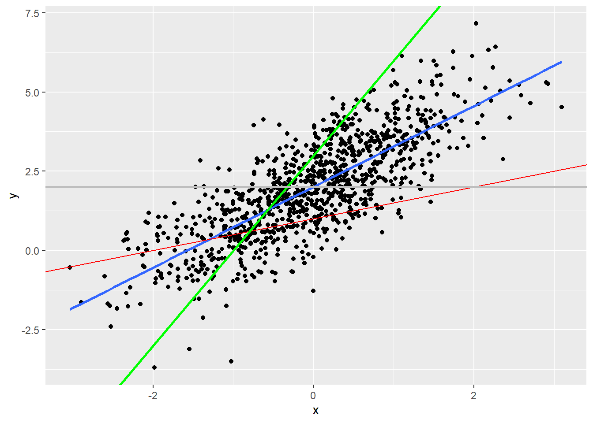

set.seed(234)
n <- 1000
x <- rnorm(n)
u <- rnorm(n)
y <- x^2 + u
m1 <- mean(y)
m2 <- median(y)
erro1 <- y - m1
erro2 <- y - m2
print(sum(erro1^2))[1] 2987.139print(sum(erro2^2))[1] 3062.869Livro: Galdino, Manoel. CEF (capítulo 6). In: _______. Introdução à Regressão para Ciências Sociais
Ao invés de expressar as notações como E[salário | gênero], vamos representar essas variáveis por letras. A variável dependente comumenete é chamada de Y e as variáveis preditoras de X. A esperança pode ser escrita com diversas variáveis preditoreas
E[Y | X1 = x1, X2 = x2, …, Xk = xk] = m(x1, x2)
“A CEF é uma função porque seu valor varia a depender dos valores particulares que X1, X~2, …, Xk assumem”. A letra m do outro lado representa qual a média de Y quando X1, X~2, …, Xk.
É comum escrever somente:
E[Y | X1, X2, …, Xk]
“Se tivermos apenas um único preditor, X, então a CEF é dada por:
E[Y | X] = m(X)
Notação:
e = Y - m(X)
Ou:
Y = m(X) + e
O erro e é uma variável aleatória.
Propriedade: “o erro e tem esperança condicional X igual a zero”. [Por quê?]
“Suponha que Y = X^2 + U, em que U ~ norm(0, 1) e X ~norm(0, 1)”.
set.seed(234)
n <- 1000
x <- rnorm(n)
u <- rnorm(n)
y <- x^2 + u
m1 <- mean(y)
m2 <- median(y)
erro1 <- y - m1
erro2 <- y - m2
print(sum(erro1^2))[1] 2987.139print(sum(erro2^2))[1] 3062.869Veja que temos duas MSE calculadas, a primeira usando a média de Y e a outra e mediana. Como é possível percebr, a média teve um desempenho melhor.
A esperança do erro é:
E[e] = E[Y - m(X)]
e
E[e | X] = E[Y - m(X) | X]
“Pela propriedade de lineraridade da esperança, temos então:”
E[e | X] = E[Y | X] - E[m(X) | X]
“Do que segue:”
E[e | X] = m(X) - E[m(X) | X]
“Existe um teorema, que não irei demonstrar, chamando de teorema do condicionamento, que diz que em situações como E[m(X)|X], isso é igual a m(X). O que torna essa equação igual a zero.”
E[e|X] = m(X) - m(X) = 0
“E existe um outro teorema, chamado de lei das esperanças iteradas (Law of Iterated Expectations) que diz que a esperança da esperança condicional é a esperança não-condicional. Ou seja:”
E[E[ Y|X ]] = E[Y]
“Utilizando esse fato, temos que a esperança não-condicional do erro também é zero.”
E[e] = E[E[e|X]] = E[0] = 0
Vamos supor dois dados. O dado A tem 6 faces e o dado B tem 4 faces. Y será o valor que sai ao jogar um dado e X é tipo de dado que foi jogado (A ou B).
“Queremos mostrar que:”
E[E[ Y|X ]] = E[Y]
“A média das médias condicionais é dado pela média quando escolho o dado A (vezes sua probabilidade) mais a média quando escolho o dado B (vezes sua probabilidade)”.
“Se eu escolher cada dado aleatoriamente, isto é, com probabilidade 50%, então o valor médio de Y, dado por E[y], é simplesmente:
E[Y|A] = (1+2+3+4+5+6)/6 = 3.5
E[Y|B] = (1+2+3+4)/4 = 2.5
3.5 x 0.5 + 2.5 x 0.5 = 3
“Por fim, uma última propriedade que não iremos demonstrar é que o erro da CEF é não-correlacionado com qualquer função de X”.
…
Nesta seção, oa utor prova porque a esperança condicional é o melhor preditor.
“O modelo de regressão que iremos rodar com nossos dados pode ser conectado com a CEF em três maneiras diferentes (pelo menos)”.
Ordinary Least Squares (OLS), ou Mínimos Quadrados Ordinários.
Uma suposição do modelo de regressão linear é que “queremos achar a melhor reta que se ajusta aos nossos dados”. “Se tivermos apenas um preditor, X, e uma variável a ser predita, Y, a equação da reta de regressão (populacional) é:”
Y = α + β x X + e
“Essa reta é chamada de reta de regressão populacional ou até função de regressão populacional.”
“Eu posso ter infinitas combinações de valores de α e β formando infinitas retas de regressões. Porém, só uma delas me dará a menor soma dos erros quadráticos.”
Interpretando a reta:
– α é o intercepto, isto é, o ponto onde a reta cruza o eixo y – β é a inclinação ou coeficiente angular da reta
library(ggplot2)
set.seed(234)
n <- 1000
x <- rnorm(n)
u <- rnorm(n)
y <- 2 + 1.3*x + u
df <- data.frame(y = y, x = x)
df |>
ggplot(aes(x, y)) +
geom_point() +
geom_smooth(se = FALSE, method = "lm") +
geom_abline(slope= .5, intercept = 1, colour="red") +
geom_abline(slope= 3, intercept = 3, colour="green", size=1) +
geom_abline(slope= 0, intercept = 2, colour="grey", size=1)`geom_smooth()` using formula = 'y ~ x'
No gráfico, é possível visualizar que a reta azul é a melhor, pois se ajusta melhor aos dados.
“Para achar os valores da reta azul (que aqui sabemos ser α = 2 e β = 1.3), podemos novamente minimizar a MSE. A derivação requer calcular a derivada ou utilização de álgebra linerar, requisitos matemáticos para além do curso.”
Fórmula de β
cov(Y, X) / var(X)
Fórmula de α
E[(Y)] - β x E[X]
Nota: As fórmulas completas estão no livro, nesta mesma seção. Nãoa s escrevo aqui porque não sei como fazer inserir expressões matemáticas no Quarto.
“Se nós aplicarmos essa fórmula para os dados do gráfico acima, iremos recuperar um valor aproximado da verdadeira reta de regressão”
library(tidyverse)
df |>
summarise(cov_yx = cov(y,x),
var_x = var(x),
beta = cov_yx/var_x,
alpha = mean(y) - beta*mean(x)) |>
knitr::kable(digits=3)| cov_yx | var_x | beta | alpha |
|---|---|---|---|
| 1.237 | 0.97 | 1.275 | 2.006 |
lm(y ~x, df)
Call:
lm(formula = y ~ x, data = df)
Coefficients:
(Intercept) x
2.006 1.275 Nas próximas seções, o autor vai justitifacar “porque faz sentido ajustar uma reta de regressão para aproximar a CEF.”
Observação
“Aproximar a CEF” significa estimar ou calcular uma função que seja uma aproximação da Função de Esperança Condicional (CEF) real. A CEF representa a relação entre uma variável dependente (ou de interesse) e variáveis independentes (ou condicionais) em um problema de modelagem estatística. No entanto, é frequentemente difícil ou impossível determinar a CEF real.
Portanto, em vez de obter a CEF exata, a abordagem comum é “aproximá-la”. Isso envolve escolher um modelo matemático ou estatístico que descreva a relação entre as variáveis de maneira simplificada e, em seguida, estimar os parâmetros desse modelo com base nos dados disponíveis.
“Se a CEF for de fato linear, então devemos usar a reta de regressão para estimar a CEF”.
Quando a CEF será linear?
– “Quando a distribuição conjunta de probabilidade de Y e X for normal (normal bivariada, no caso de duas variáveis, ou multivariada, no caso de muitas variáveis)”
– Modelo saturado: “em um modelo de regressão linear saturado, existe um parâmetro para cada possível valor que os preditores podem assumir”.
” Fora esses dois cenários, não temos muito motivo para supor que a CEF é linear”.
“Ou seja, se eu minimizar o erro entre o Y observado e minha previsão dada pelo modelo linear α + β ∗ x, em que α e β são definidos pelas fórmulas derivadas de OLS, terei o menor erro possível. Formalmente estou minimizando E[Y - m(x)]”.
…
Quando estamos interessados em modelos causais uma pergunta que surge é: “sob que condições a CEF nos diz o efeito causas de X sobre Y?
Esse tipo de modelo de regressão linear é o mais simples. Ele não tem nenhum preditor X. “Nesse caso, m(X) = E[Y] = μ, a média não condicional de Y”.
Y = μ + e
Com E[e] = 0.
“A variância não condicional do erro da CEF é dada por:”
σ^2 = var[e] = E[(e-E[e])^2] = E[e^2]
“A variância da regressão mede a porção da variância que não é “explicada” ou predita pela esperança condicional, já que é definida pela variância do erro
e. Além disso, ela depende dos preditores. Se temos preditores diferentes, a varância da regressão será diferente.”
“Uma propriedade da variância da regressão é que adicionar preditores não piora a variância e quase sempre melhora (reduz). É uma relação não-monotônica, isto é, a variância com mais preditores é sempre menor ou igual que a variância com menos preditores (se a com mais preditores incluir os mesmos preditores da com menos regressores). Por isso que uma professor meu dizia: se você mediu chuva na Jamaica, pode colocar essa variável como preditora da regressão que isso irá reduzir a variância não explicada”.
“Sabemos que a esperança condicional é o melhor preditor que existe. Porém, ainda assim pode ser uma previsão ruim, como vimos no caso dos salários condicional ao gênero. Nesses casos, é útil olhar também para a variância condicional.”
σ^2(x) = var[Y|X = x] = E[(Y - E[Y|X = x])^2] = E[e^2|X = x]
“A regressão pode ser intepretada como efeito marginal.”
O modelo de regressão linear apresentado ao longo da discussão para aproximar a CEF é “linear nos parâmetros, mas pode ser não-linear nas variáveis”.
“Assim, a seguinte equação de regressão é linear nos parâmetros:”
y = a + b * x + c * x^2 + e
“Porém, essa outra equação não é linear nos parâmetros:”
y = a + b * x + c * x^d + e
“Vejam que o parâmetro d entra exponenciado e, portanto, não linearmente.”